Кабинеты и CRM
Списки, фильтры, карточки, статусы, формы, роли и понятные рабочие очереди.
Я frontend-разработчик с коммерческим опытом. Собираю CRM, дашборды, формы, калькуляторы и интерфейсы для рутинных процессов: от первого прототипа до адаптива и публикации.
Списки, фильтры, карточки, статусы, формы, роли и понятные рабочие очереди.
KPI, графики, таблицы, экспорт, подсветка рисков и интерфейсы для принятия решений.
Калькуляторы, квизы, валидация, сохранение состояния и аккуратный путь до отправки.
Telegram/webhook-сценарии, таблицы, уведомления, парсинг и интерфейсы поверх процессов.
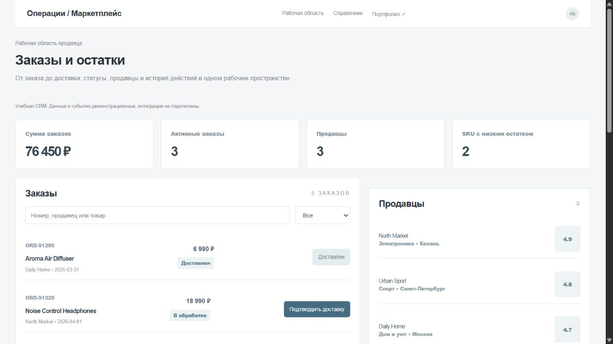
Найти заказ, изменить статус и проверить событие и SQL-результат.
Статус заказа меняется последовательно и попадает в журнал. SQLite сохраняется в браузере; SELECT-консоль позволяет проверить данные без изменения таблиц.
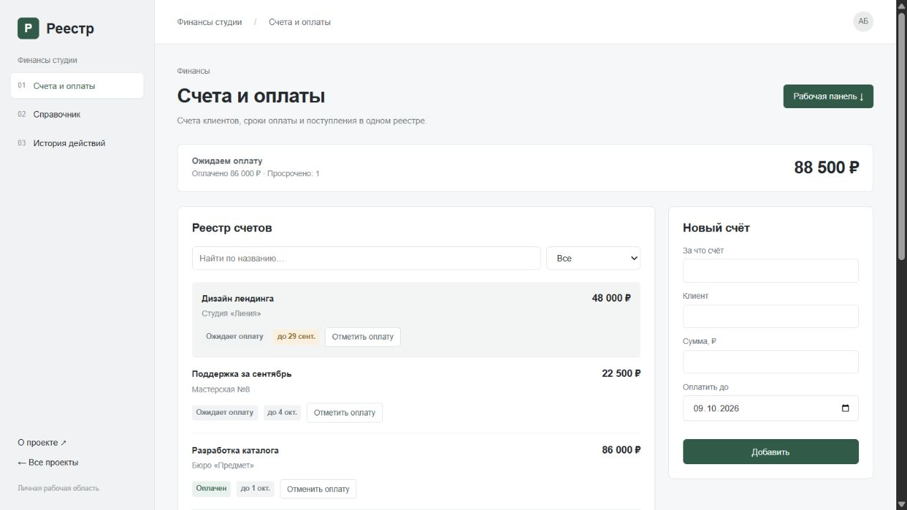
Добавить счёт, найти просроченный, отметить оплату и увидеть пересчитанный остаток.
Реестр связывает сумму, клиента и срок. Оплата пересчитывает остаток; ошибочную отметку можно отменить. Просрочка определяется по дате.
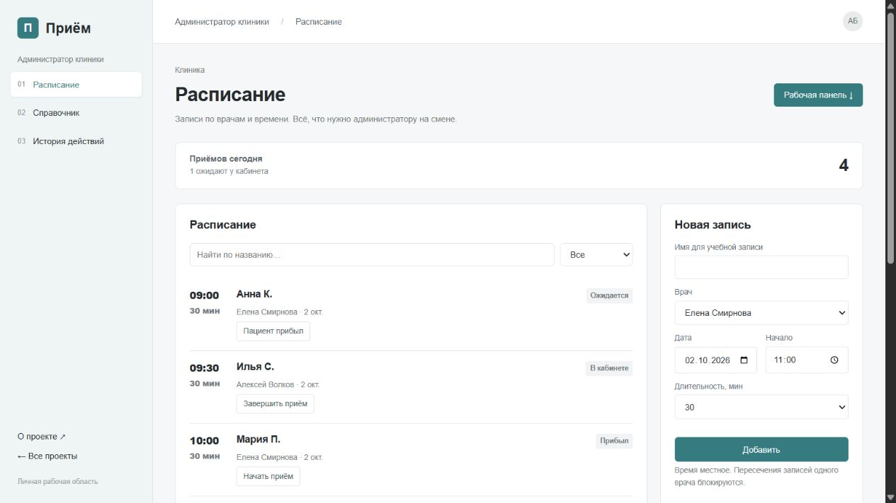
Создать запись, проверить занятость врача и провести визит от ожидания до завершения.
Запись содержит врача, дату, время и длительность. Пересекающиеся приёмы одного врача блокируются; визит проходит ожидание, приём и завершение.
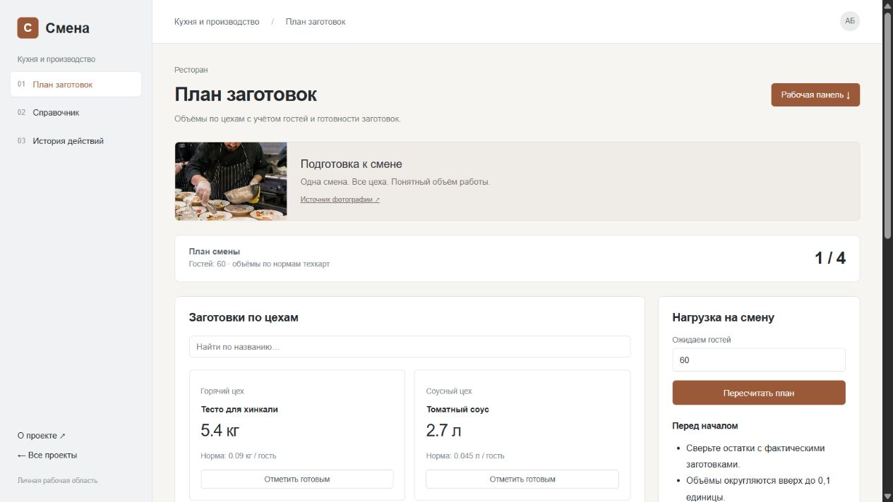
Задать число гостей, пересчитать заготовки и отметить готовые позиции.
Объём каждой заготовки рассчитан из нормы на гостя. Видны единицы и ответственный. Увеличение числа гостей возвращает готовые позиции в работу.
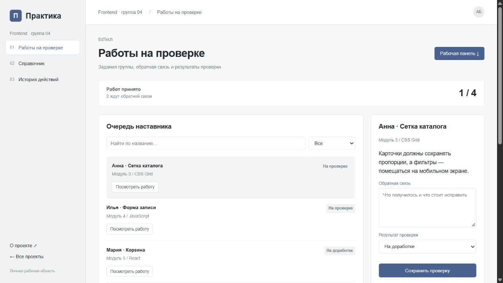
Выбрать работу ученика, написать обратную связь и принять её либо вернуть на доработку.
У каждой работы есть задание и статус. Наставник пишет обратную связь перед принятием или возвратом; решение обновляет прогресс группы.
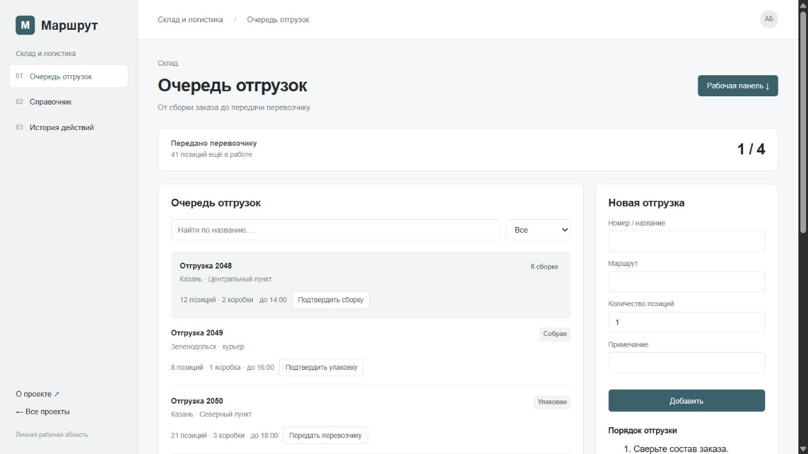
Открыть отгрузку, подтвердить сборку, упаковку и отправку по порядку.
Каждая отгрузка последовательно проходит сборку, упаковку и передачу перевозчику. Карточка показывает количество, маршрут и следующее действие.
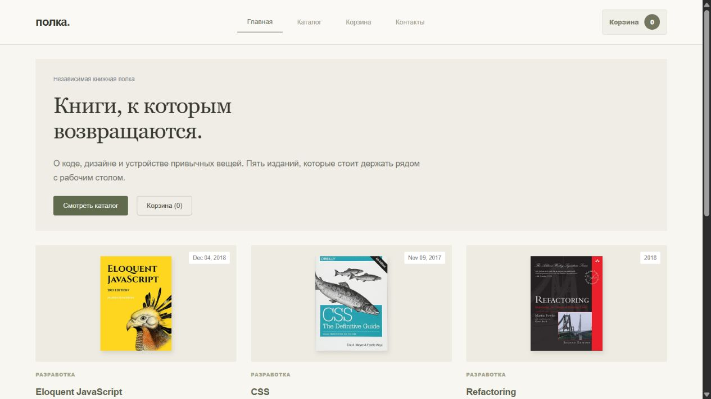
Найти товар, изменить количество, оформить учебный заказ и получить понятный результат.
Каталог реальных изданий Open Library поддерживает поиск и фильтры. Обложки и авторы взяты из открытого каталога; цены учебные. Корзина сохраняет выбранные товары и пересчитывает количество и итог. Оформление завершается подтверждением учебного заказа.
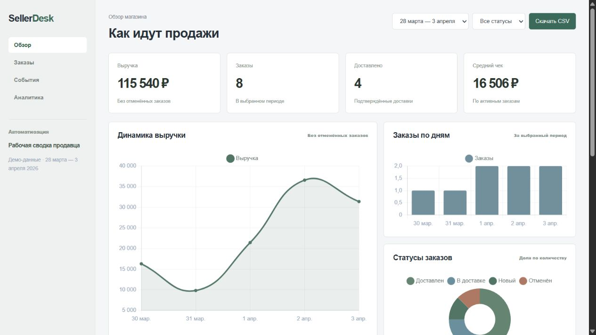
Выбрать период и статус, сверить сумму с заказами, скачать настоящий CSV.
Период и статус применяются одновременно к заказам, показателям и графикам. Отменённые заказы исключены из выручки; CSV содержит выбранный набор.
Сравнить товары, собрать корзину, выбрать доставку и сохранить учебный заказ.
Категории помогают выбрать товар. Корзина учитывает количество, город и способ доставки; пустой заказ стоит ноль. Учебный заказ сохраняется локально.
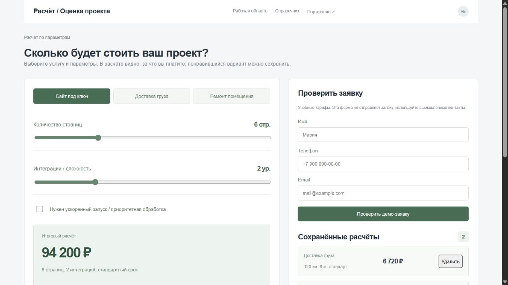
Настроить параметры услуги, понять каждую часть суммы и сохранить расчёт.
Три режима расчёта показывают базовую стоимость, объём и доплаты. Сохранённые варианты можно сравнить; форма проверяет заполнение и сообщает локальный результат.
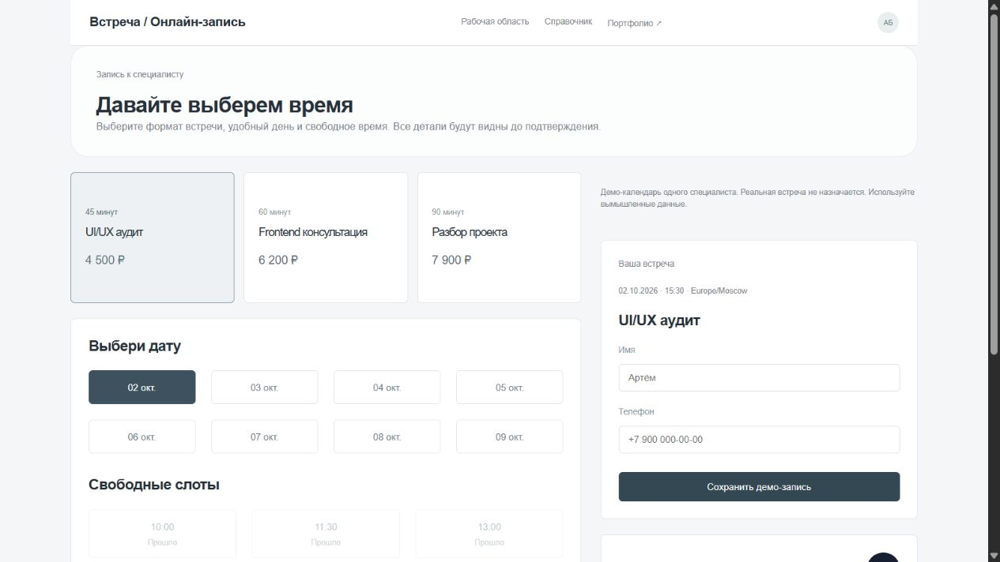
Создать учебную запись, убедиться, что время занято, и отменить её.
Свободное время зависит от длительности услуги и других записей специалиста. До подтверждения видны дата, слот и часовой пояс. Запись можно отменить.
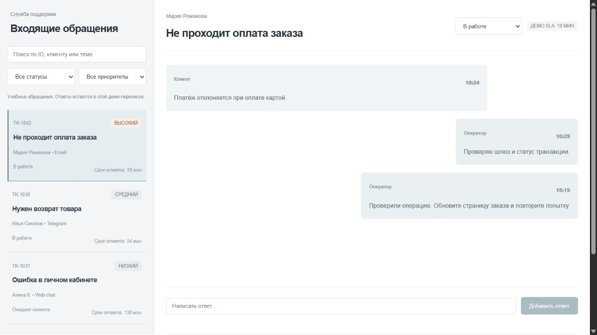
Найти обращение, написать ответ в демо-переписку и закрыть тикет.
Поиск и фильтры управляют очередью. У каждого обращения свой черновик ответа; пустая выборка скрывает переписку и блокирует действия.
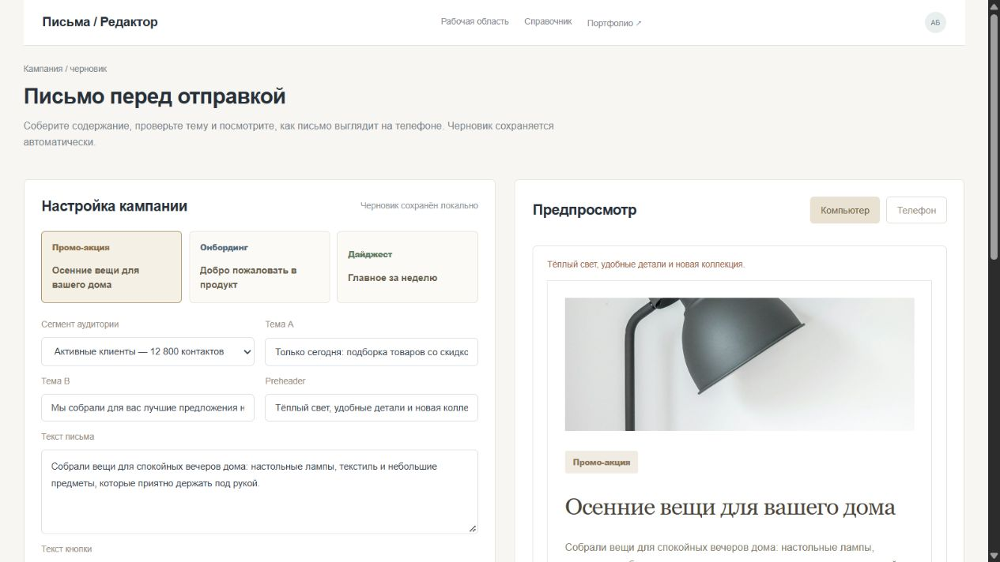
Редактировать тему и письмо, проверить ошибки, получить безопасный HTML-файл.
Проверки показывают заполненность полей и корректность ссылки. Предпросмотр переключается между ширинами; экспорт экранирует текст и создаёт HTML-файл.
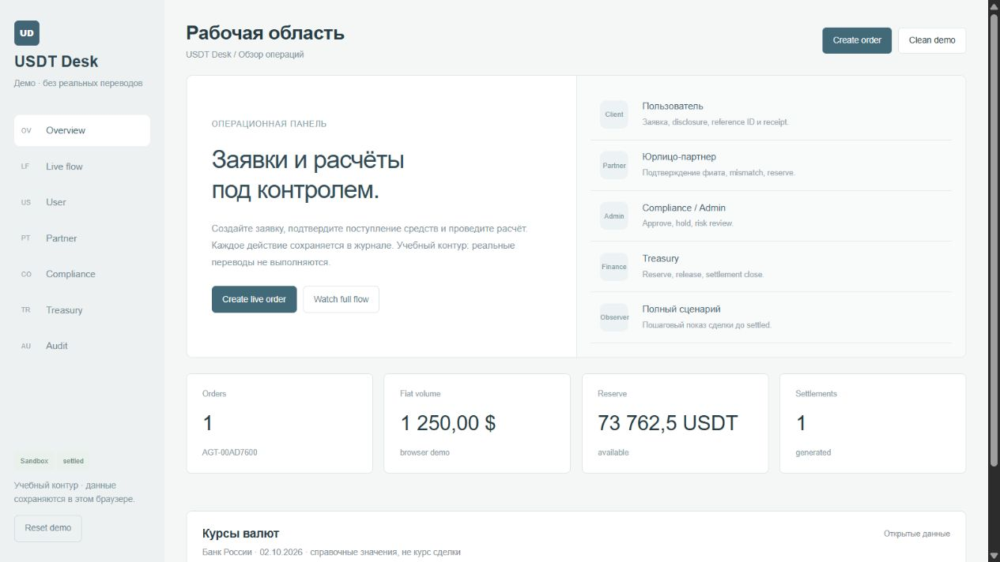
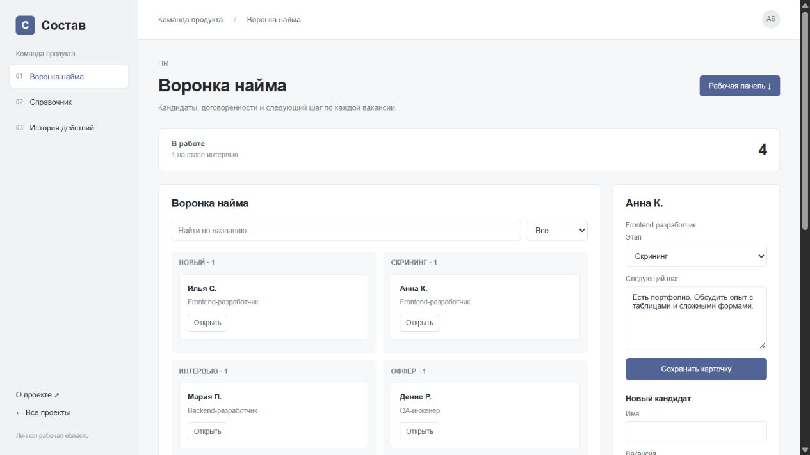
Добавить кандидата, открыть заметку, изменить этап и сохранить следующий шаг.
Карточки распределены по этапам найма. В каждой сохраняются вакансия и заметка с договорённостями; переход меняет колонку и счётчик.
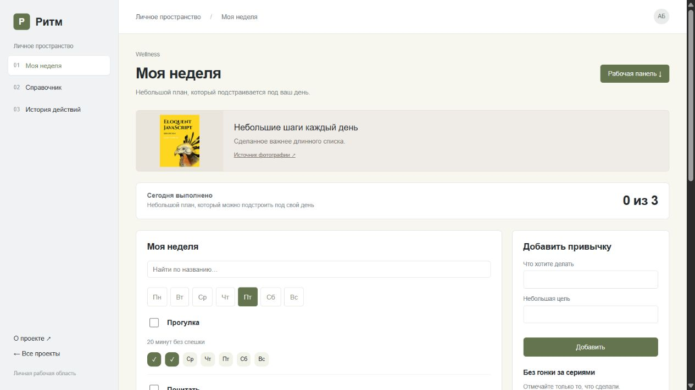
Выбрать день недели, отметить привычки и увидеть собственную неделю.
Отметки привязаны к дням недели. Можно добавить свою привычку или отменить выполнение; недельный результат считается по этим отметкам.
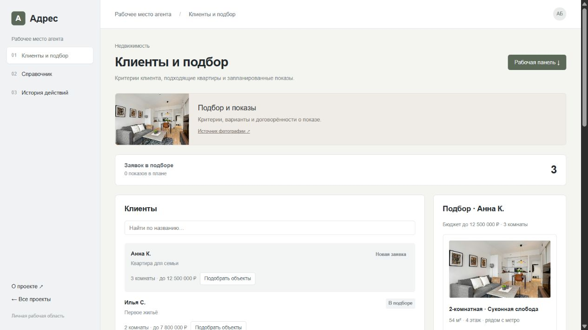
Открыть заявку, сравнить бюджет и комнаты с объектами, назначить показ подходящего варианта.
Бюджет и число комнат сопоставляются с объектами. Неподходящий вариант объясняет причину, подходящий можно сохранить в плане показов.
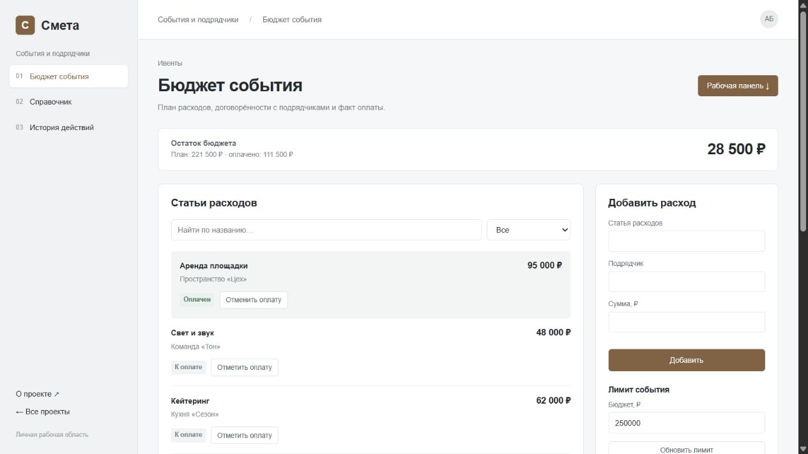
Добавить расход, задать общий лимит, отметить оплату и увидеть отклонение от бюджета.
План и оплаченные расходы считаются отдельно. Общий лимит сопоставляется со всей сметой, поэтому перерасход виден до оплаты подрядчикам.
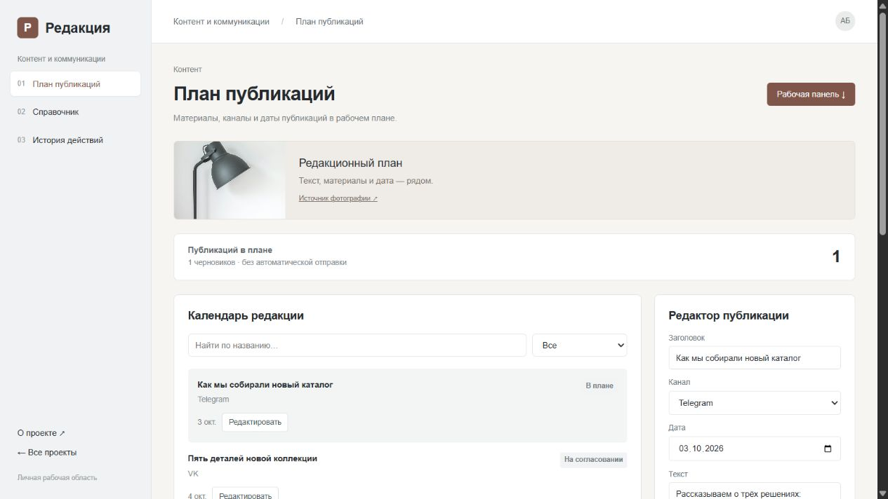
Создать черновик, выбрать канал и дату, отредактировать текст и поставить в план.
В редакторе связаны текст, канал, дата и статус. Запись нельзя поставить в план без текста и даты; изменения сохраняются в браузере.
Разработал Telegram-бота для уведомлений продавцам о новых заказах и изменениях в карточках товаров. Автоматизировал ежедневные отчёты о продажах в Google Таблицах и Excel. Собирал открытые данные о ценах и ассортименте конкурентов; настроил webhook-интеграции с внутренними системами маркетплейса.
Разрабатывал калькуляторы стоимости, слайдеры и формы обратной связи для клиентских сайтов. Подключал Яндекс Метрику и Google Analytics на фронтенде. Дорабатывал интернет-магазины и корпоративные сайты, оптимизировал загрузку страниц и LCP. Уточнял требования вместе с дизайнерами и менеджерами проектов.
Разрабатывал промо-страницы и лендинги на React. Подключал получение товаров и отправку форм через REST API. Переносил компоненты с jQuery на React, писал модульные тесты на Jest и адаптировал UI-киты агентства под задачи клиентов.
Верстал страницы по макетам Figma и адаптировал их для мобильных экранов. Дорабатывал WordPress-шаблоны, оптимизировал изображения с помощью WebP и отложенной загрузки. Исправлял ошибки вёрстки и поведения интерфейса на небольших экранах.